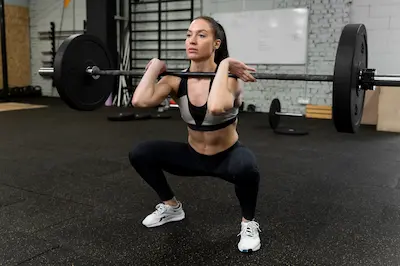

Salud Ósea en Mujeres: Prevención de Osteoporosis después de los 40
Fisiología Ósea y Riesgos Específicos en Mujeres
El sistema óseo femenino experimenta cambios radicales a partir de los 40 años debido a la disminución progresiva de estrógenos, hormonas que juegan un papel crucial en el mantenimiento de la densidad mineral ósea. Estudios de microscopía electrónica han demostrado que los estrógenos inhiben directamente la actividad de los osteoclastos (células responsables de la resorción ósea) a través de la regulación negativa de la vía RANKL/OPG, un mecanismo molecular clave en el remodelado óseo. Cuando los niveles de estrógeno caen durante la perimenopausia, esta protección desaparece, permitiendo que los osteoclastos aumenten su actividad destructiva hasta en un 300%, mientras que la formación de nuevo hueso por los osteoblastos se ve comprometida por múltiples factores, incluyendo la disminución en la producción de factores de crecimiento óseo como el IGF-1. Esta descompensación explica por qué las mujeres pueden perder hasta el 20% de su densidad ósea en los primeros cinco años después de la menopausia, un proceso que las hace particularmente vulnerables a fracturas por fragilidad, especialmente en la columna vertebral, cadera y muñeca.
Además de los cambios hormonales, otros factores contribuyen significativamente al deterioro óseo en esta etapa de la vida. La deficiencia de vitamina D, presente en aproximadamente el 80% de las mujeres postmenopáusicas, compromete la absorción intestinal de calcio y la mineralización ósea adecuada. Estudios de cohorte han demostrado que niveles séricos de 25-hidroxivitamina D por debajo de 30 ng/mL se asocian con un aumento del 45% en el riesgo de fracturas de cadera. Paralelamente, la sarcopenia relacionada con la edad (pérdida progresiva de masa y fuerza muscular) reduce el estímulo mecánico necesario para mantener la densidad ósea, creando un círculo vicioso de deterioro musculoesquelético. La investigación sugiere que las mujeres pierden aproximadamente un 3-5% de masa muscular por década después de los 30 años, lo que exacerba aún más el riesgo de osteoporosis y caídas.
Nutrición Óptima para la Salud de los Huesos
La nutrición para la salud ósea debe abordarse desde una perspectiva integral que va mucho más allá del simple consumo de calcio. Mientras que este mineral es fundamental (se recomiendan 1,200 mg diarios para mujeres mayores de 50 años), su absorción y utilización dependen críticamente de otros nutrientes cofactores. La vitamina K2, particularmente en su forma MK-7, actúa como un director de tráfico molecular, activando las proteínas osteocalcina y MGP que dirigen el calcio hacia los huesos y evitan su deposición en tejidos blandos como las arterias. Estudios japoneses han demostrado que la suplementación con 180 mcg diarios de MK-7 durante 3 años reduce significativamente la pérdida de densidad ósea vertebral y femoral en mujeres postmenopáusicas. Igualmente importante es el magnesio, que participa en más de 300 reacciones enzimáticas relacionadas con el metabolismo óseo, incluyendo la conversión de vitamina D a su forma activa. Datos del Nurses' Health Study revelan que una ingesta adecuada de magnesio (320-400 mg/día) se asocia con un incremento del 2-3% en la densidad mineral ósea.
Otros componentes nutricionales clave incluyen el boro, un oligoelemento que reduce la excreción urinaria de calcio y magnesio mientras aumenta los niveles séricos de estradiol en un 20-30%, según estudios controlados. Los ácidos grasos omega-3 de cadena larga (EPA y DHA) ejercen efectos antiinflamatorios que modulan favorablemente el microambiente óseo, reduciendo la producción de citoquinas pro-resorción como IL-6 y TNF-alfa. En cuanto a las fuentes alimenticias, los productos lácteos fermentados (yogur, kéfir) ofrecen ventajas únicas al combinar calcio altamente biodisponible con probióticos que mejoran la salud intestinal y la absorción de nutrientes. Los vegetales crucíferos (brócoli, col rizada) aportan no solo calcio sino también sulforafano, un compuesto que estimula las vías de detoxificación hepática y reduce el estrés oxidativo que daña el tejido óseo.
Ejercicios Osteogénicos: Más Efectivos que los Suplementos
El ejercicio físico constituye el estímulo mecánico fundamental para mantener y aumentar la densidad ósea, actuando a través del principio de remodelación ósea inducida por carga. Los ejercicios de impacto, como los saltos pliométricos controlados, generan fuerzas de reacción en el suelo que superan varias veces el peso corporal, activando los mecanorreceptores en el tejido óseo que desencadenan la formación de nuevo hueso. Un estudio innovador publicado en el Journal of Bone and Mineral Research demostró que mujeres postmenopáusicas que realizaban 20 saltos diarios (con 30 segundos de descanso entre cada uno) aumentaron su densidad ósea femoral en un 3% en solo 12 meses, un resultado comparable al obtenido con algunos fármacos antirresortivos. Estos ejercicios son particularmente efectivos cuando se realizan en superficies irregulares o con variaciones de dirección, ya que crean patrones de carga tridimensionales que estimulan una mayor respuesta osteogénica.
El entrenamiento de fuerza con pesas libres supera ampliamente a las máquinas de gimnasio en sus beneficios para la salud ósea. Al requerir estabilización muscular en múltiples planos, ejercicios como las sentadillas, peso muerto y press militar generan fuerzas de compresión y torsión que activan hasta un 70% más de unidades motoras y producen una mayor deformación mecánica del tejido óseo. Investigaciones con ultrasonido cuantitativo han mostrado que mujeres que entrenan con cargas progresivas (aumentando el peso en un 5-10% semanal) mantienen densidades óseas equivalentes a mujeres 15 años más jóvenes. Complementariamente, el yoga adaptado para la salud ósea, con énfasis en posturas de carga axial como el árbol o el guerrero, mejora no solo la densidad mineral sino también el equilibrio y la propiocepción, reduciendo el riesgo de caídas en un 40% según datos del National Institute on Aging. Es crucial destacar que estos beneficios son específicos al sitio - el ejercicio afecta principalmente los huesos directamente cargados - por lo que un programa completo debe incluir movimientos para columna, cadera y extremidades superiores.
Protocolo de Suplementación y Monitoreo
La evaluación y manejo de la salud ósea requiere un enfoque personalizado basado en pruebas diagnósticas avanzadas. La densitometría ósea (DEXA) sigue siendo el estándar de oro, pero la interpretación debe considerar tanto el T-score (comparación con adultos jóvenes) como el Z-score (comparación por edad), junto con la evaluación de la microarquitectura ósea mediante trabecular bone score (TBS). Los marcadores bioquímicos de remodelación ósea, como el telopéptido C-terminal (CTX) para resorción y el propéptido de tipo I N-terminal (PINP) para formación, permiten monitorizar la respuesta al tratamiento con una sensibilidad del 80-90% para detectar cambios significativos en 3-6 meses. Estos exámenes deben complementarse con la medición de niveles séricos de 25-hidroxivitamina D (objetivo >40 ng/mL), hormona paratiroidea intacta y calcio iónico, que juntos proporcionan una visión completa del metabolismo mineral.
La suplementación debe individualizarse según los resultados de estas pruebas, pero algunos principios generales cuentan con fuerte evidencia científica. El carbonato de calcio (1,200-1,500 mg/día en dosis divididas) muestra mejor absorción cuando se toma con las comidas, mientras que el citrato de calcio es preferible para personas con aclorhidria o que toman inhibidores de la bomba de protones. La vitamina D3 (colecalciferol) en dosis de 5,000 UI diarias ha demostrado ser segura y efectiva para alcanzar niveles óptimos en la mayoría de mujeres postmenopáusicas, especialmente cuando se combina con exposición solar moderada. Para aquellas con mala conversión a la forma activa, la adición de calcifediol (25-hidroxivitamina D) puede ser beneficiosa. La vitamina K2 como MK-7 (180-360 mcg/día) potencia los efectos de la vitamina D mientras reduce el riesgo de calcificación vascular, y el magnesio (300-400 mg/día de glicinato o citrato) previene el agotamiento secundario de este mineral inducido por la suplementación con calcio. Nuevos enfoques incluyen el colágeno hidrolizado tipo I (15 g/día) que proporciona los aminoácidos específicos para la matriz ósea, y los polifenoles como la quercetina que modulan favorablemente la diferenciación osteoblástica.